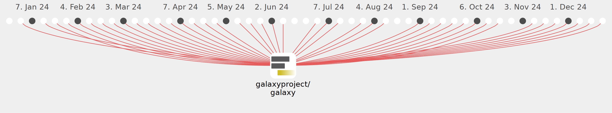

guerler

Commits all-time: 13898
Commits last year: 458

(458)
- d645a7b
- b33f4d9
- 591d8e5
- c4873ea
- 104f223
- 150ac44
- beae41b
- 80291dd
- 664af7e
- e8b76ab
- 49937da
- e34ae1a
- 8405fb2
- 9d9490e
- 6441830
- 57c544e
- bbf5d25
- ee3af6e
- 5079e63
- 53b218b
- 698aeb2
- d664147
- dd68d44
- cb7903a
- 418629b
- b4daf7d
- bd4a78a
- 20d0e18
- cb62dfe
- 97a7b22
- a4c04e3
- 9b529a0
- 8582ec5
- 262cd25
- 74adad3
- cde0e79
- 75dd26e
- 7a396e6
- 75152d5
- d2ad3ab
- a442801
- 8d09263
- 07af273
- 53f3c43
- acaeeae
- 868fbf4
- 9c9bab4
- 9784f5f
- a0bbd50
- 406b697
- 7a2eb79
- ccf2e13
- 6ddaacf
- 494c2e6
- 4407ef9
- 34fab93
- da12de9
- 4e53143
- 57d684b
- 7e9efbf
- bf153cb
- 464f65b
- 079bd61
- d1e1184
- 93d17d1
- 50deb2b
- e1b881e
- 6a944a2
- f222012
- eb47017
- bb581bc
- 99b4d04
- 23e6df0
- 06874b7
- f7c3e85
- f5862db
- a629a3c
- 184dd65
- 19f4ac3
- 3388cda
- a41e7e3
- 31d9807
- 0f6eb08
- 56ec365
- 66cca93
- 1cf5d8b
- 93b1cc4
- 8d1a8f5
- e943c17
- 4f81d06
- 54f661c
- 46e8a31
- cb6b5b1
- 0a40498
- 1b1f082
- e35bf2b
- 36b0f40
- c4f6987
- 1a341ca
- 8c7139a
- 61aff05
- 004f09e
- 5db6d72
- 14b0703
- 7e55b6a
- 4e6682b
- 3dc2f23
- 1970df1
- 067de0f
- 9fc5c19
- e0989ba
- 45efadb
- c1ec497
- c4e8a5e
- ca61470
- db73661
- f2c9730
- ce8b99c
- 428cc18
- 15115f3
- 2f57158
- 1eb844b
- d70a6dc
- 9f50c15
- 6609485
- 4f2dea9
- 6f310bd
- 6625d47
- 24b6b22
- 4cc5766
- fa97204
- a97fd99
- 0db3756
- 6419c29
- 1217f11
- 89f23af
- 90adbc2
- a1db638
- 8f4af4f
- 93b1d83
- a29b9c6
- f26c386
- 5c4c778
- 6e42455
- 05ce6f2
- 9398abe
- 2b1897e
- 6330e4a
- e1e7f93
- 945c5be
- 0c9eb2c
- c0fe1eb
- 6f7c187
- 90b0238
- 9b07d2a
- 27dc621
- 9ef959a
- bd28440
- 142dceb
- 4566830
- 999f3d5
- 1799e7c
- 1121548
- b84a8ac
- c821944
- cdb7319
- ca3642a
- 082375e
- 15aeb46
- ab1c5a6
- 6770d9e
- 2a41264
- 6ba416a
- c828ca3
- b7608c1
- 8199457
- 3342bec
- d2cd1c9
- b8bf31f
- 54c5ead
- 3093705
- 4bb1cca
- c06edbe
- 3b57244
- 3a6c8dd
- 337acfc
- 9b005e1
- 8ff1ee3
- 7ccce87
- 4514525
- 099ef88
- c5ff714
- e455e1a
- 0aadca1
- d56eaad
- 4722be3
- d51aa88
- cc36838
- 6d2d5aa
- 9afdf55
- 7c691e3
- ce59210
- a09abe6
- d67ac21
- 3a115b1
- 45e3252
- 489c1bf
- 14e1b1d
- 109c71a
- 4f555a4
- 632c933
- 304999c
- 1e1afb9
- f84e20c
- af18d75
- 738bb63
- 709218e
- 16d5353
- 5a03f05
- 62324d8
- a863e92
- dcac4f5
- cd6ac2b
- 9ed2f68
- f3377c4
- ec2c21f
- 2c5a4de
- 5c9e127
- 82b7b30
- 5f14aea
- 88a10cf
- 46c247d
- 9cbb318
- 3e427a7
- 3642c4c
- 1554695
- e533982
- c839c3a
- 1b2b2aa
- 8ac7e20
- 4c2611f
- 94566a0
- 8effaea
- 7d55361
- 3e7105f
- 5f69691
- ec70b7a
- e223781
- 74c2437
- 9abe918
- 6810c77
- d2b718e
- ea57bba
- 25e6809
- 85c6894
- f93bf55
- 03d1ccf
- 7079355
- 0b8d074
- 6d4e389
- df1928c
- e31aa75
- a5d6688
- beac11d
- 0ac365e
- 8ddb000
- 43d918f
- 20cd463
- 921c1b4
- ce27d7c
- a0f83b2
- 9b6702f
- 9182802
- 0dd1b78
- 797faa1
- 6357255
- cba8413
- 8e8a8f0
- 1b9ff32
- 97cc442
- 43c1226
- 832d62e
- bb46203
- d11ab54
- 5d5301f
- 0eb2203
- 723f92d
- 2e49d3f
- 9827dcb
- 080a72a
- 6dcc6f8
- e245919
- 06709ff
- e978ee0
- 636f6f4
- 18caa0e
- b78612b
- 3abbe62
- f5b1e96
- b6d8ab8
- f212d04
- bf132e1
- 11428d0
- 38ef60c
- 5755aa4
- 8952b28
- c0237f4
- e590a89
- 63e2a81
- 3d07d2a
- 4b90ffe
- f1e1317
- e0b4820
- 5a54090
- 83d484e
- b3f4bb2
- 20d77f1
- 4d2fe61
- 3eeb107
- ca11e91
- 0f5b261
- fc3dd1e
- c0de496
- aa4a8b8
- 765bab3
- 5cdd404
- 4430b42
- af8350a
- 85951cd
- 136e8a6
- f170db9
- bde1b40
- 4d4f39b
- f5b73ab
- b29c828
- 360b147
- 04c68ea
- 8d20256
- 9766387
- d29f738
- 3255601
- 236b125
- dc9b9ab
- 0e45784
- dfa683e
- 4a6efea
- a3bb48d
- b55b59a
- 4738306
- 9577380
- 2e0874c
- f35b8f6
- f5d2357
- b03b21a
- 2c83500
- 239a1f3
- 528898b
- 59b189d
- f0d148c
- 151ff34
- 550ee04
- 44caba7
- 726c1ed
- f297497
- 0fbb153
- 1a1e8a9
- ff08779
- 7827a2d
- db22b48
- 5441399
- 3365ead
- a24ac91
- 4e3eebd
- c49b58d
- 74b0732
- 37dc284
- efa5ada
- 5e205ad
- 63019c0
- cb98b63
- c84e014
- 7710bb4
- b2d7fe3
- 841e235
- dc8a56b
- ed1013c
- b3275f8
- 1d3e6fe
- 1b4dd45
- 51cc6ff
- e74ff84
- 55056d7
- 9159234
- 5a115bc
- d5c267d
- f999f52
- 40a9899
- 7780c62
- 968fb4f
- d3f179a
- 07290ad
- ba8a113
- e97018f
- eec1997
- 4c052ee
- 4bdef92
- ebf2889
- e827716
- f94b53e
- 747bced
- 65d807c
- 1fdf6f5
- 94e2592
- 4a7c220
- 77d335e
- ad667fb
- 7a68911
- e96aeda
- f6395d6
- f1a30a2
- 53f61e5
- 0e97596
- 92cb1e7
- 4fd6535
- fdb7c15
- 1e15e48
- f0389d8
- 5d1e990
- 6cf5917
- f2d497f
- 080628c
- 3cc8d3b
- eef5b44
- 5d71ee2
- 065c4bb
- be84e77
- 7baefb5
- 03436f7
- b36640b
- f596bcc
- 800de83
- baf74d8
- 3166ce7
- a784f2a
- 4b03852
- 78012af
- 6da9693
- 110550d
- 096ac5b
- de7ad24
- adeddbe
- 4988a1d
- 1261381
- ce4d988
- 0adae47
- f415007
- 8347fc5
- eda3b0e